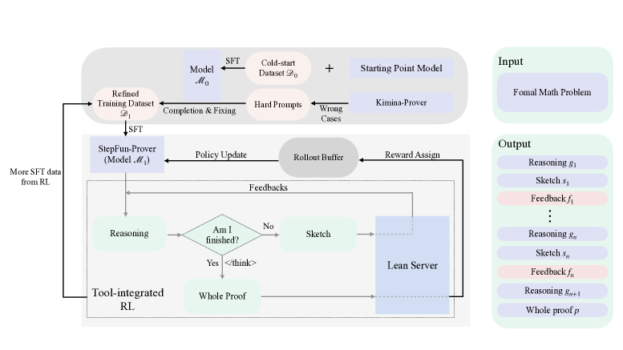
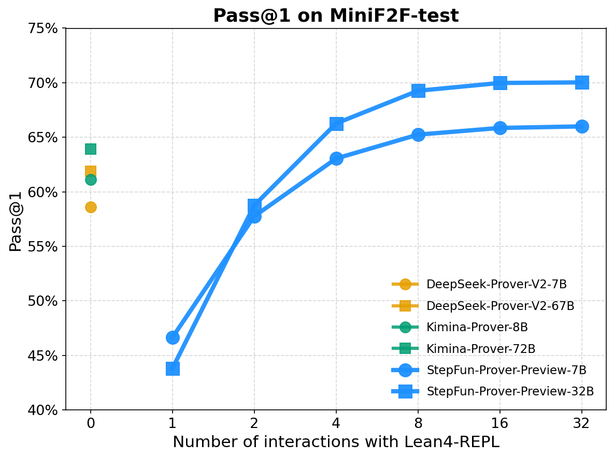
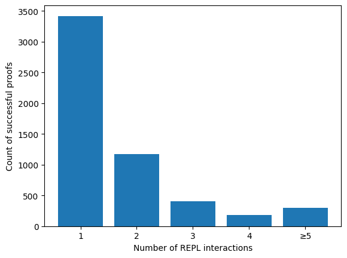

StepFun-Prover Preview 把 Lean 4 验证器变成模型推理过程中的「随手可用的工具」：模型写一段证明草稿 → 交给 Lean 跑 → 读错误反馈 → 修正 → 再跑，全部发生在一条思维链里，循环到证明通过为止。仅用 32B 参数、极少的采样次数，就在 miniF2F-test 上拿到 70.0% pass@1。
过去的定理证明器把 Lean 验证器只当成「最后判对错」的裁判，自己一口气写完整段证明；写错了就只能重新采样，一题往往要试几十上百次。本文的关键转变是：让模型在推理中途就反复调用 Lean 验证器，像熟练的人类用户那样根据真实报错诊断问题、调整策略。为此作者设计了一条端到端训练流水线——冷启动 SFT → 工具集成强化学习 → RL-SFT 迭代——并自研了能并发跑 1000+ Lean 进程的验证服务，把多轮 RL 训练加速了 10 倍以上。最终 32B 模型以更小的体量、极少的采样超过了 DeepSeek-Prover-V2-671B 和 Kimina-Prover-72B。
问题
先理解痛点，才能理解本文为什么要让模型「一边思考一边验证」。
自动定理证明近年靠长思维链大模型取得了不小进展，但有一个尴尬的事实：它们要靠海量采样才能堆出好成绩。按已发表结果，把每题的采样次数从 32 次加到 64 次，准确率往往只多 3%～4%，呈明显的边际递减——这说明同一道题在多次尝试里反复栽在同样的错误模式上。
为什么会这样？因为这些证明器的推理模式是人为预先设定、僵化的，无法真正消化 Lean 4 给出的反馈。而一个熟练的 Lean 用户只需要几次尝试就能完成证明：他会读懂报错、诊断问题、自适应地换策略。这种巨大的效率差距，也成了普通用户使用证明器的门槛。于是作者提出了贯穿全文的问题：
本文的回答是：放手让模型自己决定何时停止用工具，不限制它与 Lean 4 交互的次数，鼓励它进行开放式、工具辅助的推理——就像人类通过「试探、验证、反思」来学习和自我纠正一样。
已有方案
本文主要与两类范式形成对比。理解它们「把验证器放在哪里」，就能看懂本文的定位。点击卡片展开细节。
模型每次只生成一个证明步骤（tactic），再配合最佳优先搜索（BFS）或蒙特卡洛树搜索（MCTS）在证明树上探索路径。
卡在哪：搜索靠启发式导航，探索能力是用大量算力堆出来的；推理被切成孤立的小步，缺乏全局的自我反思。
模型一口气直接写出完整证明（如 DeepSeek-Prover、Kimina-Prover），验证器只在最后判一次对错，不参与中间推理。
卡在哪：反馈只用作最终的对错信号，中途没有任何修正机会；写错了只能整段重来，所以需要极大的采样量。
核心机制
这是全文最重要的一点——模型的一次「回答」不再是纯文本，而是文本推理、Lean 代码、真实反馈三者交错的混合轨迹。
在 rollout（生成）时，模型产出的内容由三种成分交替组成，并用特殊标记分隔：
g：用自然语言分析题目、解释报错、决定下一步怎么改。<sketch>…</sketch>：包裹一段待验证的 Lean 4 代码。一旦检测到 </sketch>，生成暂停，代码被送进沙箱执行。<REPL>…</REPL>：沙箱（Lean4-REPL）的执行结果——成功信息或错误消息——被填回这对标记，喂给模型，生成继续。
最终得到一条混合轨迹 [g₁ ⊕ s₁ ⊕ f₁ ⊕ … ⊕ p]。当模型认为大功告成，它会生成特殊分隔符 </think> 并把最终的 Lean 证明放在其后——只对 </think> 之后的代码做基于规则的验证来给整条轨迹打分。这一「想清楚了再交卷」的设计，让奖励判定既可靠又简单。
本文方法
如何把一个普通推理模型，训练成会「自主用工具、看反馈改证明」的证明器？下面这张图是全文的骨架。

</think>）则产出 Whole Proof 提交 Lean Server。流水线按训练阶段依次展开，点击每一阶段查看细节：
作者汇集多个开源形式化数学数据集（Lean Workbook、STP 数据集），并用 Kimina-Autoformalizer-7B 把 Numina Math 1.5 的部分题目自动形式化。但这些题目有反复出现的质量问题：
于是用 DeepSeek-V3 过滤掉低质量题目，再用两条并行流程构造冷启动数据集 𝒟₀：
两阶段后得到冷启动模型 ℳ₀。基座模型为 DeepSeek-R1-Distill-Qwen-7B / 32B。
一个细节：训练时对 <REPL>…</REPL> 区间的反馈 token 做 loss 掩码（不计入损失）。这样外部反馈 token 不会干扰损失计算，既保证训练稳定，又保护模型自身生成的连贯推理不被打断。
ℳ₀ 虽有基本交互能力，但表现远低于预期。分析发现一个关键症结：ℳ₀ 难以把 Claude 风格和 Kimina 风格这两种不同的响应模式融合好。作者用一个巧妙的方法解决：
与只生成纯文本的常规 RL 不同，这里的 rollout 让 LLM 与沙箱式环境协同工作，产出文本 + Lean 代码 + 实时反馈的混合内容（即前面「核心机制」一节描述的循环）。
奖励设计：只看 </think> 之后的最终证明——通过 REPL 验证则奖励为 1，否则为 0。这种二元结果奖励简化了监督、抑制 reward hacking，并因为只盯最终结果而鼓励更多样的解题行为。
算法：在 ℳ₁ 上用 GRPO 训练；仿照「PPO 去掉 KL 正则」的做法，这里也省去 KL 项，以鼓励从一个已对齐的指令模型出发去探索。每题采样 G 个候选，按组内奖励做标准化得到优势：
Aᵢ = ( rᵢ − mean(r₁,…,r_G) ) / std(r₁,…,r_G)
再以 PPO 式的裁剪目标（clip，无 KL）优化策略。
当工具集成 RL 收敛后，作者从训练中准确率低于 0.5 的难题里收集正确轨迹，再筛出那些展现了充分 REPL 反馈分析的轨迹。这些精选轨迹用于再做一轮 SFT，随后再进行二次强化学习，进一步增强模型的工具集成推理能力。这就是图 2 中「More SFT data from RL」那条回环。
RL 关键参数：rollout batch = 512，每题 8 个样本，最大生成长度 16384，REPL 超时 60 秒，温度 1.0、top-p 0.999（鼓励探索）。
动态数据筛选（亮点）：训练提示来自 STP 数据集，先剔除 SFT 用过的题。作者不在训练前静态筛数据，而是把数据选择嵌进 RL 训练循环本身：用单轮 RL 跑出每题的成功率，只保留成功率严格介于 0 和 1 之间的题——既去掉永远做对的「太简单」题，也去掉当前永远做不出的「太难」题。这种在训练中动态筛选的策略，能抓住那些「起初太难、但随模型变强而变得可解」的高价值题目。
Lean 4 服务工程（让多轮 RL 可行的关键）：
这些优化让多轮 RL 训练提速 10 倍以上，并使「不限交互次数」的多轮 RL 在工程上真正可行。
实例演示
这是论文附录给出的真实轨迹。点「下一步」，看模型如何从一句报错，一步步逼近正确证明——这正是「一边思考一边验证」的精髓。
theorem test_theorem (x y z : ℝ) (hx : 0 < x) (hy : 0 < y) (hz : 0 < z) : (x^2 - z^2)/(y+z) + (y^2 - x^2)/(z+x) + (z^2 - y^2)/(x+y) ≥ 0 := by
error: unexpected end of input; expected '{'
error: unsolved goals
⊢ (x^2 - z^2)/(y+z) + (y^2 - x^2)/(z+x) + (z^2 - y^2)/(x+y) ≥ 0
div_nonneg 拆成「分子≥0」「分母>0」两个子目标，分子用 nlinarith + 一堆 sq_nonneg 平方项硬凑，分母用 mul_pos。 have h1 : (y+z) > 0 := add_pos hy hz -- 同理 h2, h3
have h4 : … = (分子)/((y+z)*(z+x)*(x+y)) := by
field_simp [h1.ne.symm, h2.ne.symm, h3.ne.symm]; ring
rw [h4]
apply div_nonneg
· ring_nf
nlinarith [sq_nonneg (x-y), sq_nonneg (y-z), sq_nonneg (z-x), …]
· apply mul_pos; apply mul_pos; all_goals linarith
error: linarith failed to find a contradiction a✝ : 0 > -(x^2*z^2) - x^2*y^2 + (x^4 - z^2*y^2) + z^4 + y^4 ⊢ False error: 'apply' failed, failed to unify 0 < ?a * ?b with 0 ≤ (y+z)*(z+x)*(x+y)
mul_pos 给的是 0 < …，可目标是 0 ≤ …，类型对不上。但报错里泄露了分子化简后的真实样子。ring_nf 把分子展开、再用 sorry 占位，专门看看分子化简成了什么。sorry 处目标: ⊢ 0 ≤ -(x^2*z^2) - x^2*y^2 + (x^4 - z^2*y^2) + z^4 + y^4 （即 x⁴ + y⁴ + z⁴ - x²y² - x²z² - y²z²） error: 'apply mul_pos' 仍无法匹配 0 ≤ (y+z)*(z+x)*(x+y)
x⁴+y⁴+z⁴ - x²y² - x²z² - y²z²——这是个经典可写成平方和的式子！方向有了。x⁴+y⁴+z⁴-x²y²-x²z²-y²z² = ½·((x²-y²)²+(y²-z²)²+(z²-x²)²)，是三个平方的和，必然非负。于是用 num_eq、sqForm 重写，再用 mul_nonneg + sq_nonneg 收掉分子。 have num_eq : (分子) = x^4+y^4+z^4 - x^2*y^2 - x^2*z^2 - y^2*z^2 := by ring
rw [num_eq]
have sqForm : … = (1/2)*((x^2-y^2)^2 + (y^2-z^2)^2 + (z^2-x^2)^2) := by ring
rw [sqForm]
apply mul_nonneg
· norm_num
· apply add_nonneg; … exact sq_nonneg (x^2-y^2) … -- 三个平方非负
error: 'apply mul_pos' failed, failed to unify 0 < ?a * ?b with 0 ≤ (y+z)*(z+x)*(x+y) （分子已过，只剩分母这个小尾巴）
0 ≤ vs 0 < 的类型问题上。apply mul_pos; apply mul_pos; all_goals linarith——本质问题没解决。error: 'apply' failed, failed to unify 0 < ?a * ?b with 0 ≤ (y+z)*(z+x)*(x+y)
mul_pos 这条路对 0 ≤ 的目标根本走不通——必须换个思路：先证「>0」，再转成「≥0」。mul_pos 得到分母严格大于 0（pos2 : 0 < …），再用 le_of_lt 把「>0」转成目标要的「≥0」。 · have pos1 : 0 < (y+z)*(z+x) := mul_pos h1 h2
have pos2 : 0 < (y+z)*(z+x)*(x+y) := mul_pos pos1 h3
exact le_of_lt pos2
{} ← 空消息 = 零报错 = 证明完整且正确 ✓
</think>，把这份干净的完整证明作为最终答案交卷。ring_nf 反馈暴露了分子的标准形，第 5 轮反复撞墙才意识到要换分母证法。没有中途的验证反馈，纯靠一次性生成几乎不可能命中。
实验结论
评测基于 Lean 4.20.0，每题采样 32 次估计 pass@1（温度 1.0、top-p 0.999、最大生成 20480 token、REPL 超时 60 秒）。
| 模型 | Pass@1 |
|---|---|
| DeepSeek-Prover-V2-7B | 58.6% |
| DeepSeek-Prover-V2-671B | 61.9% |
| Kimina-Prover-8B | 61.1% |
| Kimina-Prover-72B | 63.9% |
| StepFun-Prover-Preview-7B | 66.0% |
| StepFun-Prover-Preview-32B | 70.0% |
7B 就追平了 DeepSeek-Prover-V2-671B 和 Kimina-Prover-72B；32B 以更小的体量把此前所有同类模型甩开 4% 以上。
| 最大生成长度 | Pass@1 |
|---|---|
| 4096 | 58.3% |
| 8192 | 66.5% |
| 12288 | 68.9% |
| 16384 | 69.9% |
| 20480 | 70.0% |
给模型更多「思考 + 交互」的空间，准确率单调上升——更多的工具交互就是它的测试时算力。RL 阶段训练奖励也从约 0.63 稳步升到 0.78，测试 pass@1 同步抬升，说明 RL 持续生效。


通过工具集成 RL（带冷启动），StepFun-Prover 发展出若干会利用实时反馈的高级行为，包括但不限于：
即便 REPL 没报错、只有 warning，模型也会主动把警告处理干净，而不是见好就收。
当某段执行超过时间阈值（如 60 秒），模型会动态重构证明，换一条更省时的路径。
通过分析 REPL 反馈逐轮改进解答——正是上面实例演示展现的能力。
结论与展望
本文提出了一条端到端训练工具集成推理模型的流水线，核心是冷启动数据合成与工具集成强化学习。由此得到的 StepFun-Prover-Preview，靠在推理中持续利用实时环境反馈来迭代精修证明，在 miniF2F-test 上用极少采样达到 70.0% pass@1，证明了「人类式反思 + 形式化验证」结合的有效性。
将形式化推理的严格性迁移出去，提升大模型一般意义上的推理能力。
面向更高阶的数学发现，构建多智能体系统。